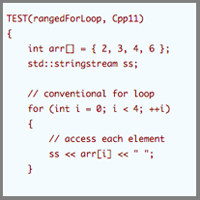

Lesson 2
 Pointers, Arrays, Structures, Expressions, and Statements
Ranged Base for Loops
C++ provides a number of methods for looping through each element of a collection such as an array. The following example first shows a conventional for loop as inherited from C. The second and third example show C++'s ranged base for loop which provides a concise syntax for looping through every element of a collection. The range based for loop works for arrays, vectors and all other collections provided with the C++ Standard Library (i.e., the STL).
TEST(rangedForLoop, Cpp11)
{
int arr[] = { 2, 3, 4, 6 };
std::stringstream ss;
// conventional for loop
for (int i = 0; i < 4; ++i)
{
// access each element
ss << arr[i] << " ";
}
CHECK_EQUAL("2 3 4 6 ", ss.str());
// ranged base for loop
ss.str("");
for (int &j : arr)
{
ss << j << " ";
}
CHECK_EQUAL("2 3 4 6 ", ss.str());
ss.str("");
// ranged base for loop using type deduction with auto
for (auto &k : arr)
{
ss << k << " ";
}
CHECK_EQUAL("2 3 4 6 ", ss.str())
}
Null Pointers
It is often useful to have a known invalid pointer value to determine whether a pointer variable contains a legitimate address. This known invalid pointer value is called null. A pointer that has a null value is called a null pointer. C++ has 3 null pointer values.
char* ptr4 = NULL; // C way char* ptr5 = 0; // C++ way prior to C++11 char* ptr6 = nullptr; // C++ 11 way (the preferred way)
Why 3 different ways to do the same thing? Simply that over time the language was improved. The language designers chose not to remove prior methods so existing code would not break. Prefer nullptr.
Reference Types and Parameters
Reference Types
Reference types are a new addition to C++; they serve as an alias or alternate name for an object. Like a const, a reference type must be initialized when it is declared. The syntax of such a declaration is as follows:
Type& name;
Type is the data type (e.g., int) and name is the variable name.
int aValue = 10; int& speed = aValue;
All operations on a reference act upon the object to which they refer.
int aValue = 10;
int& speed = aValue;
speed += 10;
// Adds 10 to aValue
int& speed = 10; // illegal–a reference type must be
// initialized with an lvalue.
If you're not familiar with lvalues and rvalues, an lvalue is a something that can appear on the left side of an assignment statement, and an rvalue can appear on the right side. Literal constants may only be rvalues. Other values may be an lvalue or rvalue depending on context.
int a = 10; // a is an lvalue, 10 is an rvalue int b = a; // a can appear on either side of an assignment
//
// C to C++ - Reference Types 1.0
// A First Look at Reference Types
//
#include <iostream>
using namespace std;
int main()
{
auto number = 10;
int& refNumber = number; // refNumber is an
int* ptrNumber; // alias for number
cout << number << endl; // Prints 10
cout << refNumber << endl; // Prints 10
refNumber = 5; // refNumber and number
// both assigned value 5
cout << number << endl;
ptrNumber = &refNumber; // Assigning refNumber
// to a pointer
cout << *ptrNumber; // Prints 5
return 0;
}
A reference type is similar to a pointer except a pointer need not be initialized. Also, a reference type does not have full pointer semantics. We'll see the consequences of such a restriction shortly.
Initialization of References
A reference type must be initialized when it is declared. It cannot be changed to refer to another object after initialization. This is true whether the reference is a const or whether the value being referred to can be modified:
int a = 10; int& value = a; // value now refers to a
If the reference is a const it can be initialized by a literal constant or a variable. In the case of a literal constant the compiler creates a temporary object of type T and the reference refers to the temporary.
unsigned char mine; int d1, d2; int& a = 1024; // illegal: 1024 is not an lvalue char& b = mine; // illegal: not exact type int& c = d1 + d2; // illegal: not an lvalue const int& a = 1024; // ok - temporary int variable created with the value 1024 const char& b = mine; // ok - temporary int variable created with the value of the char variable mine const int& c = d1 + d2; // ok - temporary int variable created with the value of d1 + d2
References are often used as function parameters. We'll cover function parameters in detail later in the course.
References Versus Pointers
Although similar, references are not the same as pointers. References can not be used where the reference variable can not be initialized when it is declared. For example we cannot have an array of references.
Stack and Heap Memory
C++ programmers often talk of stack memory and heap memory. What's the difference? Why is it called stack memory? Why is it called heap memory?
The stack is the memory set aside as scratch space for a thread of execution. When a function is called, a block is reserved on the top of the stack for local variables and some bookkeeping data. When that function returns, the block becomes unused and can be used the next time a function is called. The stack is always reserved in a LIFO order; the most recently reserved block is always the next block to be freed. This makes it really simple to keep track of the stack; freeing a block from the stack is nothing more than adjusting one pointer.
Attributes of the Stack:
- Stored in computer RAM like the heap.
- Stack memory is reserved in a LIFO order, thus it operates as a stack data structure.
- Variables created on the stack will go out of scope and automatically deallocate.
- Much faster to allocate in comparison to variables on the heap
- Implemented with an actual stack data structure.
- Stores local data, return addresses, used for parameter passing
- Can have a stack overflow when too much of the stack is used. (mostly from inifinite (or too much) recursion, very large allocations)
- Data created on the stack can be used without pointers.
- You would use the stack if you know exactly how much data you need to allocate before compile time and it is not too big.
- Usually has a maximum size already determined when your program starts.
The heap is memory set aside for dynamic allocation. Unlike the stack, there's no enforced pattern to the allocation and deallocation of blocks from the heap; you can allocate a block at any time and free it at any time. This makes it much more complex to keep track of which parts of the heap are allocated or free at any given time; there are many custom heap allocators available to tune heap performance for different usage patterns.
Attributes of the Heap:
- Stored in computer RAM like the stack.
- Variables on the heap must be destroyed manually and never fall out of scope. The data is freed with delete, delete[] or free.
- Slower to allocate in comparison to variables on the stack.
- Used on demand to allocate a block of data for use by the program.
- Can have fragmentation when there are a lot of allocations and deallocations.
- In C++ data created on the heap will be pointed to by pointers and allocated with new or malloc.
- Can have allocation failures if too big of a buffer is requested to be allocated.
- You would use the heap if you don't know exactly how much data you will need at runtime or if you need to allocate a lot of data.
- If misused - responsible for memory leaks
Heap and Stack Example
int foo()
{
char *pBuffer; // --nothing allocated yet
{
// Create 500 bytes on the stack
char buffer[500];
// Create 500 bytes on the heap
pBuffer = new char[500];
}// -- buffer is deallocated here, pBuffer is not
} // --- oops there's a memory leak, I should have called delete[] pBuffer;
Generally, space to hold variables is allocated at compile time when the program is built or at runtime when space to hold local variables is allocated on the stack. Global memory and that allocated to variables in main aside, local variables have a transient lifetime. They appear when we enter their context and disappear when we leave; for example, several of the variables in the last homework assignment. Their allocation and deallocation is managed by the system. Note that when local variables are deallocated, they are not morphed into some third dimension where they disappear forever; nor are they set to any particular value. They still exist, with their latest values, on the stack memory (use your debugger to see).
Access and use of out of scope variables is never OK. What is an out of scope variable? The following example shows the classic example:
int* badFunction()
{
// returns the address of a local heap variable - bad
int value = 45;
return &value;
}
void usesBadFunction()
{
int* x = badFunction();
}
Senior developer: "You are using an out of scope variable - this is illegal and you need to change the code so it does not do this"
Junior developer: "But, the code is working fine"
The result of this out of scope code error is often an intermittent crash or exception. This is why the junior developer above might state the code is working fine (in his likely small sample tests). But sooner or later this program will seriously misbehave.
Fortunately today many compilers today will issue a warning for such code.
The reason the code appears to work fine is because the memory address for the variable still exists. But it won't work fine every time as the operating system is free to overwrite the value at any time. These are sometimes the most difficult to find bugs as they intermittently behave well, or not. The value at the memory address is likely unchanged (for awhile until the memory gets used by another part of your program, or by another program). You might ask why C/C++ does not clear the memory or give it special values after it is not used. The answer is simply performance. Programs would run slower if they did these extra steps.
An Overview of Dynamic (i.e., Heap) Memory
Dynamic memory is a scheme that gives the user control (and responsibility) for allocation and deallocation at runtime. Now the user says when the space for the variables is allocated and when it is deallocated. Like the local variables, when dynamically allocated memory is deallocated, it also is not morphed into some third dimension where it disappears forever; nor is it set to any particular value. It still exist, with its latest values, at the same address from which it was allocated. Dynamic memory (which is also called the heap) is no different from any other RAM (random access memory). It is RAM…same color, same size, same shape, same smell, same taste. Like the stack, there is a system level software driver that manages that piece of memory, just like that which manages the stack, to give it its behaviour.
The C language provides the two operators malloc and free as the user interface to the heap. C++ replaces those with the operators new and delete. The new and delete operators come in two flavours. One flavor to handle single instance types and the other to handle arrays.
// for single instance new type; delete pointer; // for arrays new type [amount]; delete[] pointer;
If the allocation succeeds, (i.e. if you have not run out of heap), the allocation operators will return a pointer to the piece of memory that has been allocated to you…don’t loose it or you will have a memory leak. If the allocation fails new throws a failure to allocate exception…which you must catch and handle.
Don't worry now about heap allocation exceptions. We'll cover heap allocation exceptions later in the certificate program. For now, assume your allocations always succeed. (As they will unless you ask for terabytes of memory)
When you dynamically allocate a piece of memory, the system sets aside that amount of memory for you…conceptually it puts your name on it…and returns the address of that piece to you. When you are allocating a block using the [], the same process occurs, however, the system also makes a note of the size of that block and stores that with your allocation. So, when you return the memory through the delete[] operator, it knows that it has to delete the appropriate amount. It then takes your name off the list as owning that piece of memory and it is returned to the heap.
Note that the system does nothing to that memory than taking your name off of it. The values all remain. If you dereference it through the original pointer, you can still read those values. However, like writing beyond the end of a container, you do not own that memory. At some undetermined time, the system will overwrite that memory location.